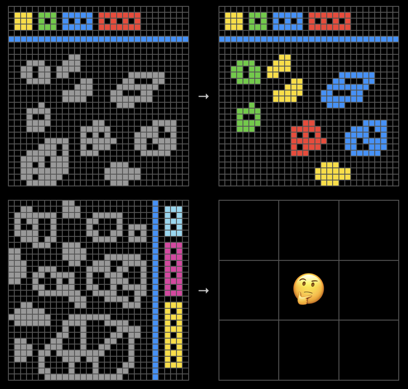

Andrew Marble
marble.onl
andrew@willows.ai
January 1, 2026
I wrote recently about “Red Teaming Eliza1”. The premise is that if you run common AI safety evaluations on a “dumb” system that effectively just repeats your words back to you, it still gets flagged as dangerous, because the evals assume some base level of agency that isn’t there. I’m going to argue that there is a similar mistaken premise when we try and measure the intelligence of AI systems.
Here is an example question from the ARC-AGI 2 Benchmark2 that claims “ARC-AGI is the only AI benchmark that measures our progress towards general intelligence.”

The task is to extrapolate from the examples on top to figure out what the missing image is. Spoiler alert, the shapes get colored based on how many holes they have in them, and shapes with a hole count that doesn’t match the color key are deleted. This reminds me of IQ or standardized test puzzles, and if you know anything about AI models you can picture it having been historically very hard.
I don’t want to criticize the test, it was written by smart people that know what they are doing and I agree it measures intelligence as they define it. What I want to criticize is the extent to which we’ve focused on defining intelligence as roughly “how good a transformer model does on a complicated task you give it”. While this is perfectly fine for many cases, it’s myopic, with an implicit assumption or at least a glossed over caveat that the model is some kind of mind that we can probe the intelligence of by asking it to do different tasks.
In many cases this won’t matter, except sticking to a purely task-based view of intelligence is limiting in what you can measure and probably only just measures more of the same thing. If neural networks are universal function approximators, and we have a set of tests that just measure whether they can approximate some function, we shouldn’t be surprised by the results. We’ve gone from playing chess to Starcraft to translation to passing a turing test to complex reasoning - it looks like the goalpost is getting moved but from another perspective it looks like we just prove the same thing over and over, that AI can do tasks once we define them for it.
With respect to measuring capability and intelligence, there is a kind of conflict of interest where we have developed the technology before we have developed ways to measure it, and thus have focused on measuring what we have. I’d like to see existing evals broadened, first by focusing on what kinds of things we’d like to ask or learn about an intelligence, and then building systems that can answer them, whether that’s a harness for an LLM or something new altogether.
Some examples that are not explicitly task based that might be interesting:
See what it does when left on its own
Try to kill it3
Determine and interfere with (help or hinder) its goals
For LLMs (broadly defined to include vision etc), currently the only category of AI model where talking about intelligence makes sense, we’d have to look at how they could be configured with tools and instructions in a way that the kinds of tests mentioned can make sense.
Some current LLM harnesses that de-emphasize the task based approach are:
Vending Bench4: a “benchmark” where an AI system is set up to run a physical vending machine over a long time horizon. The construct is closer to a system with goals and autonomy, and while its a benchmark in its own right, perturbing the system and examining the response could be interesting.
The METR long tasks benchmark5 is along the same lines but it is obviously still task based with shorter tasks.
A blog post in which the author experimented with prompting an LLM in a countdown loop, basically providing periodic user prompts indicating how much time was left (based on some specified total time) and observing what the LLM did. This is along the lines of observing what it does on its own.
These examples are still designed to evaluate transformer models (& co), rather than as arbitrary tests of machine intelligence. For the immediate future, transformer models are what we have, but it is still worth looking at what general probes we can build for intelligence, and configuring LLMs to be compatible with them, rather than simply looking for more tasks we can get them to do, when we know they can already do arbitrary tasks.